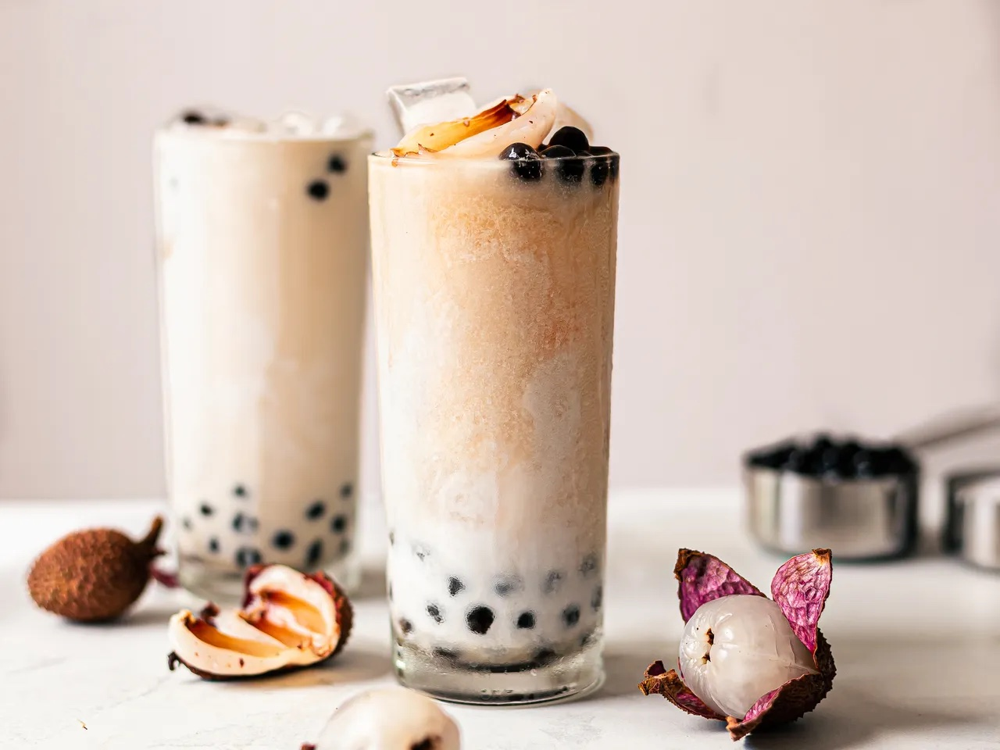

Recipe: Milk Tea Boba

Boba Tea Especial
Boba tea is a type of tea drink made from tea leaves and a variety of other leaves. It is a sweet, refreshing, and flavorful drink that is made from a variety of tea leaves. It is usually made with a variety of tea leaves, but can also be made with other leaves.
Ingredients List
- 1/4 cup dried boba tapioca pearls
- 1 to 2 tea bags per serving, any kind/li>
- 1/2 cup of water
- 1/2 cup sugar
- Milk, almond milk, or sweetened condensed milk
- Fruit Juice or Nectar(Optional)
Directions
- Measure 2 cups of water for every 1/4 cup of boba being prepared into a saucepan. Bring the water to a boil over high heat. Add the boba and stir gently until they begin floating to the top of the water.
- Turn the heat to medium and cook the boba for 12 to 15 minutes. Remove the pan from heat, cover, and let the pearls sit for another 12 to 15 minutes.
- While the boba are cooking, make a simple sugar syrup to sweeten and preserve them once cooked. Bring 1/2 cup of water to a boil over high heat on the stove or in the microwave. Remove from heat and stir in 1/2 cup sugar until dissolved. Set aside to cool.
- This can be done either while the boba are cooking or ahead of time. Allow enough time for the tea to cool completely before making the boba. Bring 1 cup of water to a boil. Remove from heat and add the tea bag (or bags); use one tea bag for regular-strength bubble tea or two for a stronger tea flavor. Remove the tea bag after 15 minutes and chill the tea.
- Once the boba have finished cooking, drain them from the water and transfer them to a small bowl or container. Pour the sugar syrup over top until the boba are submerged. Let sit until the boba are room temperature, at least 15 minutes, or refrigerate until ready to use. Boba are best if used within a few hours of cooking, but will keep refrigerated for several days. The boba will gradually harden and become crunchy as they sit.
- Pour the prepared tea into a tall glass and add the boba. Add milk for a creamy bubble tea, juice for a fruity tea, or leave plain and add a little extra water. Sweeten to taste with the simple syrup from soaking the boba.